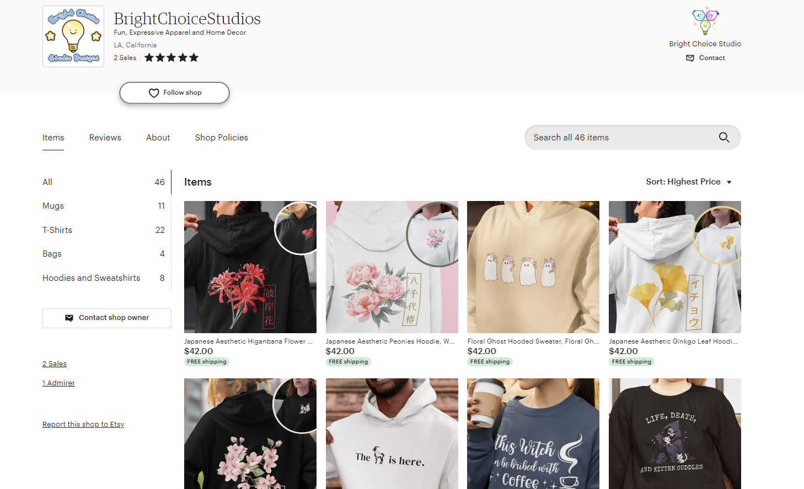
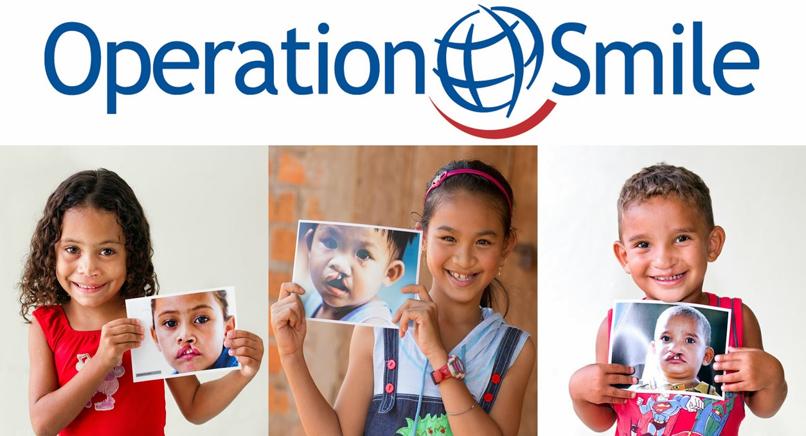

Love Quest
Alongside a team of 9 other CPP Game Dev club members, I developed a short demo of Love Quest, an RPG mixed with tell-tale aspects. I implemented player movement, over-world maps, and environment interaction in the Godot game engine by programming and debugging 6 hours a week to ensure game functionality. At the end of the semester-long project, our team presented our final product to the rest of the club members.
Just My Luck
I learned Construct to make a platformer game in 3 days as my submission to Virtual Codeday Winter 2021. It had also been my first time participating in a hackathon-type event. It was a nice learning experience!
Bright Choice Studios Designs
I co-founded and currently manage an Etsy print-on-demand shop, increasing customer engagement and sales through adept market research, SEO optimization, and ensuring effective design and product quality.
Project Smile
I was the vice president of Project Smile, a recycling club at Mt. SAC Early College Academy I founded alonside friends which would donate all profits to Operation Smile, an organization that funds surgeries for children with cleft palate. During my 3 years on the board, our club funded more than $300 for one cleft palate surgery.